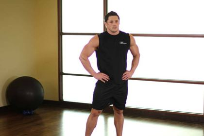
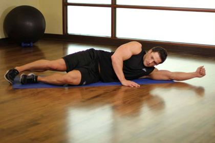
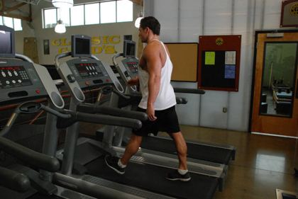
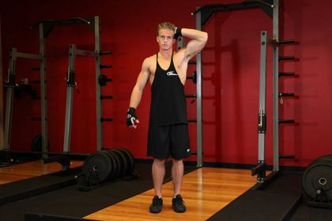
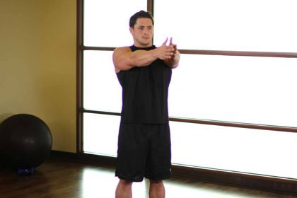

Neck pain (desk & phone posture): rehab exercises & recovery plan
Stiff, sore neck muscles, usually not serious. Strengthening the neck and shoulder muscles helps more than stretching alone.
Common in: Students, office work, wrestling · Body area: Neck · Updated November 2026
Education, not diagnosis. This guide explains how this injury is usually rehabilitated. It cannot tell you what injury you have — see a doctor or physiotherapist to confirm it, especially after a fall, a pop or surgery.
Follow this plan day by day — free. The IKJON app turns it into a calendar with animated demos, timers and a pain diary. No account, no ads.
Start the Neck pain planTypical signs
- Stiff, sore neck
- Worse after long phone or desk time
- Headache starting at the base of the skull
See a doctor first if you have any of these
- Weakness, numbness or tingling spreading down the arm
- Dizziness, double vision, trouble speaking or swallowing
- Pain after a fall or accident
- Fever with a very stiff neck
How long does recovery take?
It depends on how serious the injury is. These are typical plan lengths:
| Severity | Usual description | Typical plan |
|---|---|---|
| Acute Under 6 weeks | Recent stiff neck. | 30 days (about 4 weeks) |
| Persistent 6–12 weeks | Not settling on its own. | 60 days (about 9 weeks) |
| Chronic Over 3 months | Long-term or recurring neck pain. | 90 days (about 3 months) |
The rehab plan, stage by stage
Move to the next stage only when you meet its “move on when” checks — not just because the weeks have passed.
Move gently
Goal: Restore comfortable movement.

Neck mobility2 × 8
Mobility · Neck range of motion- Sit or stand tall.
- Slowly nod down and up, then turn left and right.
- Move in a comfortable range.
Tip: Great break from phone and desk work.
Chin tuck3 × 10
Isometric · Deep neck flexors · 5 s hold- Sit or stand tall, eyes level.
- Glide the chin straight back (make a 'double chin').
- Hold 5 s, relax.
Tip: Don't nod down — slide straight back.
Shoulder blade squeeze3 × 10
Isometric · Scapular muscles- Sit or stand tall.
- Draw shoulder blades back and down.
- Hold 5 s.
Tip: No shrugging up to the ears.

Open book2 × 8
Mobility · Upper back rotation- Lie on your side, knees bent, arms together in front.
- Open the top arm across to the other side, following it with your eyes.
- Return slowly.
Tip: Breathe out as you open.

Brisk walk15 min
Cardio · Fitness, tissue health- Walk on flat ground at a pace that raises breathing.
- Keep posture tall and arms swinging.
Tip: For low back pain, walking is one of the best treatments.
Move on when:
- Turning the head comfortably
Strengthen
Goal: Neck and shoulder-blade strength.

Neck isometric3 × 5
Isometric · Neck muscles · 10 s each direction- Place your hand against the side of your head.
- Gently push the head into the hand without moving.
- Hold 5–10 s. Repeat front, back and both sides.
Tip: Use only 30–50% effort.

Bent-over row3 × 12
Strength · Upper back, shoulder blades- Hinge forward with a flat back, weights or band in hands.
- Pull the elbows back, squeezing the shoulder blades.
- Lower slowly.
Tip: Keep the neck long and the back flat.

Prone T & Y raise3 × 10
Strength · Lower & middle trapezius- Lie face down on a bench or the floor.
- Lift the arms out to a 'T', then up to a 'Y', thumbs up.
- Lower slowly.
Tip: Small lift, no shrugging.

Band pull-apart3 × 15
Strength · Rear shoulder, upper back- Hold a band at shoulder height, arms straight.
- Pull the band apart to touch the chest.
- Return slowly.
Tip: Ribs down, don't arch the back.
Chin tuck3 × 10
Isometric · Deep neck flexors- Sit or stand tall, eyes level.
- Glide the chin straight back (make a 'double chin').
- Hold 5 s, relax.
Tip: Don't nod down — slide straight back.
Move on when:
- Desk day without neck pain
Build endurance
Goal: Keep the neck strong for life.
Bent-over row3 × 15
Strength · Upper back, shoulder blades- Hinge forward with a flat back, weights or band in hands.
- Pull the elbows back, squeezing the shoulder blades.
- Lower slowly.
Tip: Keep the neck long and the back flat.
Prone T & Y raise3 × 12
Strength · Lower & middle trapezius- Lie face down on a bench or the floor.
- Lift the arms out to a 'T', then up to a 'Y', thumbs up.
- Lower slowly.
Tip: Small lift, no shrugging.

Wall push-up plus3 × 12
Strength · Chest, serratus anterior- Hands on a wall at shoulder height, body straight.
- Bend the elbows to bring the chest to the wall.
- Push back, then push a little further to spread the shoulder blades.
Tip: The 'plus' at the end protects the shoulder.

Forearm plank3 × 30 s
Core · Whole core- Forearms on the floor, elbows under shoulders.
- Lift into a straight line from head to heels.
- Hold and breathe.
Tip: Squeeze glutes; don't let the hips sag.

Doorway chest stretch2 × 30 s
Stretch · Chest, front of shoulder- Forearm on a door frame, elbow at shoulder height.
- Step through gently until you feel the chest stretch.
- Hold, then switch sides.
Tip: Undoes rounded 'phone posture'.
Move on when:
- Pain-free daily life
- Keep 2×/week
Important: Move often: every 30–45 minutes of screen time, do a few chin tucks and shoulder rolls. Raise your screen to eye level.
What the research says
Strength of evidence: Moderate
- Strengthening the neck, shoulder and upper-back muscles reduces chronic neck pain (moderate-quality evidence).
- Stretching alone did not help — combine stretching with strengthening.
Sources: Gross et al. 2015, Cochrane review (27 trials)
Common questions
How long does neck pain take to heal?
It depends on severity. Acute: about 30 days (about 4 weeks). Persistent: about 60 days (about 9 weeks). Chronic: about 90 days (about 3 months). Move on by meeting each stage's checks, not by the calendar alone.
When should I see a doctor?
See a doctor or physiotherapist to confirm the injury, and get help urgently if you notice: Weakness, numbness or tingling spreading down the arm; Dizziness, double vision, trouble speaking or swallowing; Pain after a fall or accident; Fever with a very stiff neck.
Should exercises hurt?
Mild discomfort up to about 3–4 out of 10 that settles within 24 hours is usually acceptable. Stop if pain is sharp, goes above 5 out of 10, or swelling increases afterwards.
Ready to start? Open the plan in the IKJON app and it guides you day by day, with demos for every exercise.
Start the plan free